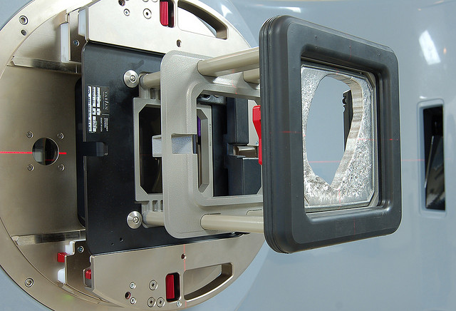
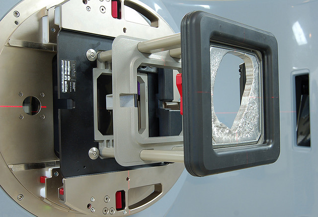
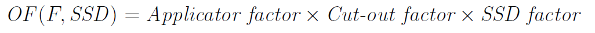
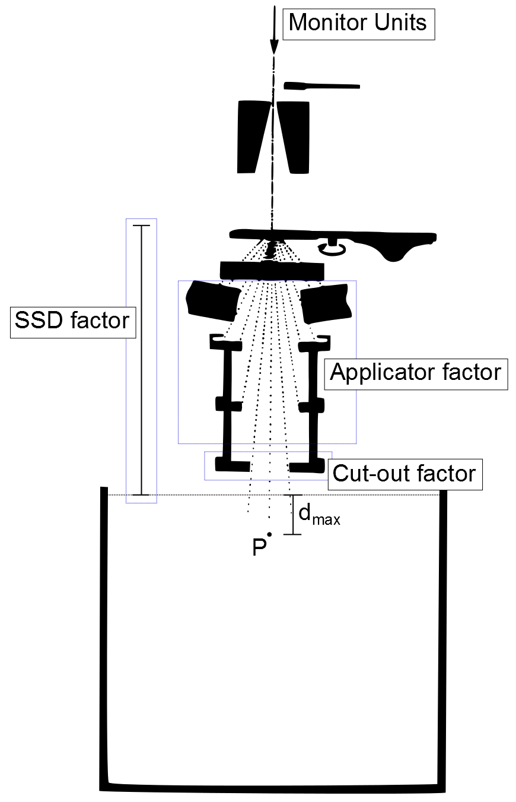
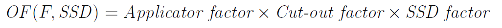
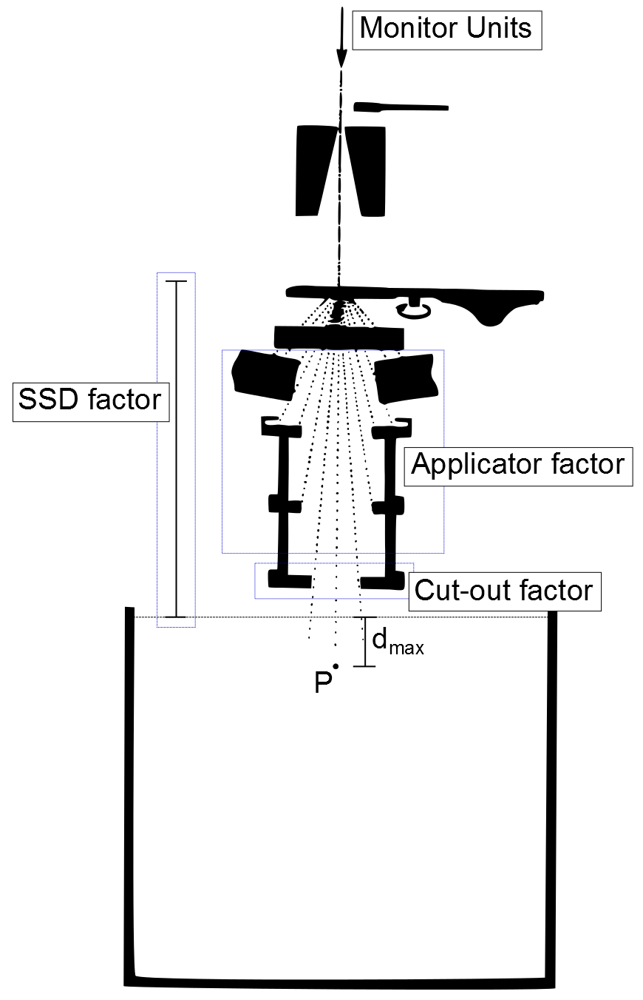

Modelling Electron Cut-out Factors
by Simon BiggsOverview
- Background
- Linac collimation
- Scatter effects
- Electron output factor
- Objective
- Method
- Smoothing spline
- Uncertainty
- Give, gap, and slope
- Fit flexibility
- Validation
- Results and Discussion
- Validated fits
- Fits not validated
- Outliers
- Validation
- Model demonstration
- Conclusion
- Improvement and future direction
- Questions

Electron beam collimation
 

Collimation

Scatter effects

The electron output factor

 



Objective
To predict electron cut-out factors that have been measured in a water tank with a known uncertainty.
Overview
- Background
- Linac collimation
- Scatter effects
- Electron output factor
- Objective
- Method
- Smoothing spline
- Uncertainty
- Give, gap, and slope
- Fit flexibility
- Validation
- Results and Discussion
- Validated fits
- Fits not validated
- Outliers
- Validation
- Model demonstration
- Conclusion
- Improvement and future direction
- Questions
Advantages of the method used
- Only needs cut-out factors that have already been measured
- Takes the input of cut-out shape length and width
- Increased accuracy compared to basic interpolation
- Gives the uncertainty in the cut-out prediciton
- Reduces the frequency that factors need to be measured
- Can be used to increase the accuracy of a pencil beam model
Smoothing Spline


Determining the Uncertainty
- Defined a lower bound uncertainty by:
- Predicting measured points after their removal
- Compared to the region parameters give, gap, and slope
- Fit flexibility calculated by:
- Added Guassian noise to all measured cut-out factors
- Created fit with new noisy data
- Repeated 10 000 times creating a set of fits
- Took the standard deviation of the set of fits
- Compared to the region parameters give, gap, and slope
- Uncertainty determined by:
- Scaled flexibility to be above the lower bound uncertainty
- Used maximum uncertainty predicted by the parameters
Need for Region Parameters


Three parameters
- Give – to determine outlier influence and number of points in a particular region
- Gap – to determine the boundary definition
- Slope – to weight regions of higher gradient accordingly
Give


Give calculation

Gap


Gap cut-off

Slope

Fit flexibility


Validation
- Fitting procedure was repeated with a random subset of data points
- This subset fit was used to predict the removed data points
- This was repeated
- The predicted uncertainty was compared to the prediction errors in the removed data points
- A fit was deemed valid should an error greater than 2 SD occur no more than than what would be expected by the Gaussian distribution
Overview
- Background
- Linac collimation
- Scatter effects
- Electron output factor
- Objective
- Method
- Smoothing spline
- Uncertainty
- Give, gap, and slope
- Fit flexibility
- Validation
- Results and Discussion
- Validated fits
- Fits not validated
- Outliers
- Validation
- Model demonstration
- Conclusion
- Improvement and future direction
- Questions
Validated fits


Applicator/Energy combinations without enough measured data
Too few points within boundary

Potential Outliers


Validation


Model Demonstration
Overview
- Background
- Linac collimation
- Scatter effects
- Electron output factor
- Objective
- Method
- Smoothing spline
- Uncertainty
- Give, gap, and slope
- Fit flexibility
- Validation
- Results and Discussion
- Validated fits
- Fits not validated
- Outliers
- Validation
- Model demonstration
- Conclusion
- Improvement and future direction
- Questions
Improvement and/or Future direction
- Effective clinical implementation
- Well defined length and width measurement
- User friendly
- Improved use of slope parameter
- Propegate measurement uncertainty
- Further data collection in sparse regions
- Shape detail
- Area and perimeter
- Model lateral scatter separately
- Sector integration
- Patient geometry
- Adapted pencil beam model
- Use scipy's SmoothBivariateSpline